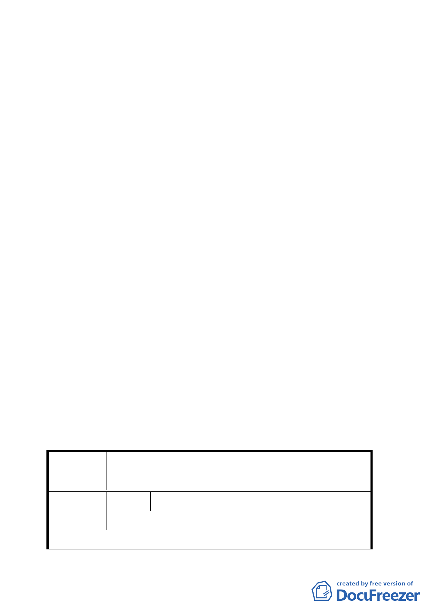

（四）「本案小汽車停車量建議依原法定標準之百分之七十採
計，另摩托車停車場則應視實際需求設置之」乙節，及
發展局所建議「本案不適用停車獎勵規定」乙項併提大
會確認。
（五）全案請市府依上述會議結論研提修正對照表及相關補充
說明資料到會後，續提委員會議（大會）討論。
（六）公民或團體陳情意見之處理情形詳如后附綜理表。
九、市府於九十三年七月二十六日以府都新字第０九三一四八
六七三００號函檢送相關補充資料到會。
決議：
一、本案除「都市設計管制要點」中第三條第（一）款修正為
「本案面臨華陰街之建築物，應自地面層高度二十四公尺
以上之樓層退縮三公尺以上建築，以呼應華陰街商圈之都
市紋理設計」外，其餘依市府提報「都市計畫內容修正前
後說明對照表」、「交通衝擊分析」及修正後「都市設計管
制要點」修正通過。
二、有關後續涉及財務、資產管理、回饋等問題，請捷運局依
程序審慎處理。
三、公民或團體所提意見審決如後綜理表。
臺北市都市計畫委員會公民或團體所提意見綜理表
修訂臺北車站特定專用區內轉運站用地（交九）土地使用
案名
管制計畫案
編 號 １ 陳情人 陳重晃
陳情理由
建 議 辦 法 一、華陰街從淡水線自承德路段為十二米計畫道路，希望
二○